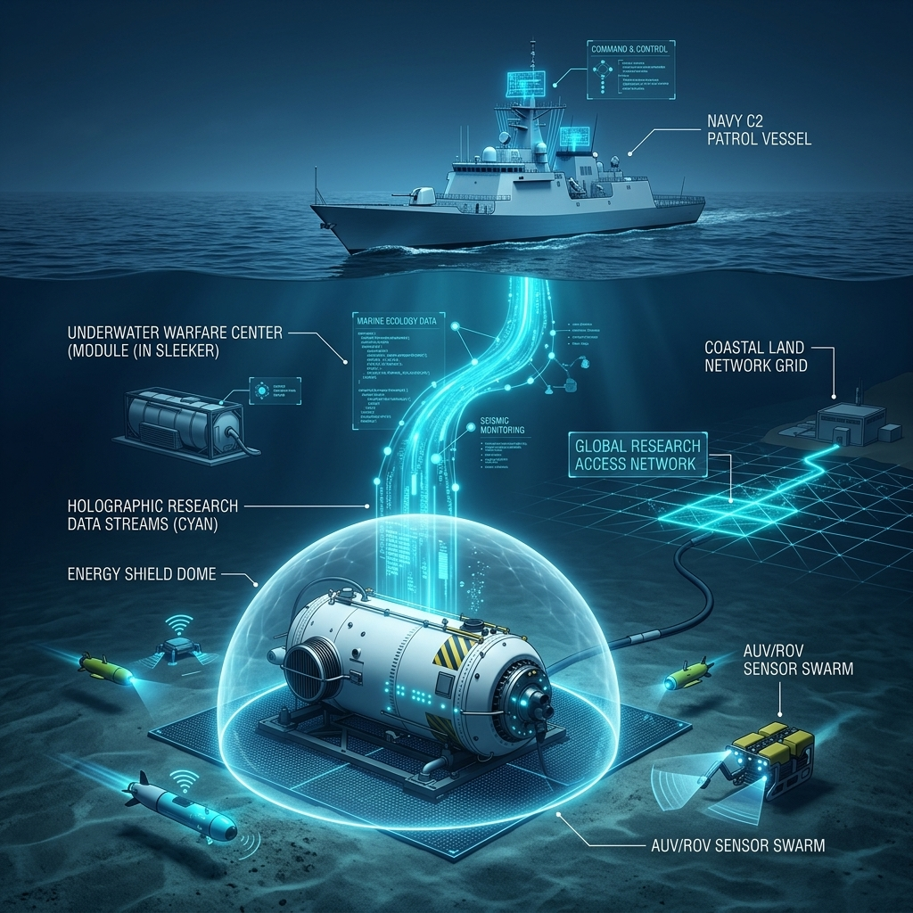

บทปิดของงานวิจัย — สรุปผลที่ได้จากการวิจัยตามวัตถุประสงค์ทั้ง ๓ ประการ และประโยชน์ที่ได้รับจากการวิจัย ๓ ประการ พร้อมข้อเสนอแนะ ๓ ด้าน (เชิงนโยบาย เชิงปฏิบัติ และการวิจัยครั้งต่อไป) ภายใต้กลไก ศรชล. และรูปแบบ The Shield 3.0 Concluding chapter — summarizing the results of the research according to the 3 objectives and the 3 key benefits, along with recommendations in 3 areas (policy, practical, and future research) under the THMECC (ศรชล.) framework and The Shield 3.0 model.
การวิจัยเรื่องแนวทางการกำหนดบทบาทและการจัดระเบียบพื้นที่ทางทะเลของกองทัพเรือภายใต้กรอบแนวคิดศูนย์ข้อมูลใต้น้ำ (UDC) เพื่อความมั่นคงของโครงสร้างพื้นฐานดิจิทัลภาครัฐตามกลไก ศรชล. เป็นการวิจัยเชิงคุณภาพแบบพรรณนาวิเคราะห์ ตามวัตถุประสงค์ ๓ ประการ สรุปผลได้ดังนี้ The research on "Guidelines for Defining the Roles and Marine Spatial Planning of the Royal Thai Navy under the Underwater Data Center (UDC) Framework" for the security of government digital infrastructure under the THMECC mechanism is a qualitative descriptive research. The findings corresponding to the three objectives are summarized below:
ศูนย์ข้อมูลใต้น้ำ (UDC) เป็นทางออกเชิงยุทธศาสตร์ต่อข้อจำกัดของศูนย์ข้อมูลบนบก ทั้งด้านพลังงาน ภัยพิบัติ และอธิปไตยทางข้อมูล โดยพื้นที่ทิศตะวันออกของเกาะครามมีความเหมาะสมสูงสุด ทั้งด้านความลึก สัณฐานกำบังตามธรรมชาติ การอยู่ภายในเขตปลอดภัยในราชการทหาร และอยู่นอกร่องน้ำเดินเรือพาณิชย์ ขณะที่ภัยคุกคามที่แท้จริงในสภาพน้ำตื้นของอ่าวไทย คือ สงครามพื้นทะเลจากยานขนาดเล็กและการปฏิบัติการในลักษณะพื้นที่สีเทา มิใช่เรือดำน้ำขนาดใหญ่ The Underwater Data Center (UDC) is a strategic solution to the limitations of land-based facilities regarding power, disasters, and data sovereignty. The area east of Koh Kram exhibits the highest suitability in terms of depth, natural shelter, location within a military safety zone, and distance from commercial shipping lanes. The primary threats in the shallow Gulf of Thailand are seabed warfare from small submersibles and gray-zone operations, rather than large conventional submarines.
รูปแบบการคุ้มครองที่เหมาะสม คือ การประยุกต์การจัดระเบียบพื้นที่ทางทะเล (MSP) กำหนดเขตหวงห้ามเด็ดขาดและเขตควบคุมหรือพื้นที่กันชน ร่วมกับระบบแยกการจราจรทางเรือ ภายใต้การคุ้มครองแบบพหุมิติและฐานทางกฎหมาย ๒ ชั้น คือ เขตปลอดภัยในราชการทหาร และกฎหมายเฉพาะคุ้มครองโครงสร้างพื้นฐานใต้น้ำที่สำคัญ The appropriate protection model involves applying Marine Spatial Planning (MSP) to establish an Absolute Exclusion Zone (MEZ) and a Controlled/Buffer Zone, integrated with a vessel Traffic Separation Scheme (TSS). This operates under a multi-dimensional defense framework and a two-tier legal foundation: military safety zones and specific legislation protecting Critical Underwater Infrastructure (CUI).
กองทัพเรือควรทำหน้าที่เป็นแกนปฏิบัติการภายใต้กลไกศูนย์อำนวยการรักษาผลประโยชน์ของชาติทางทะเล (ศรชล.) โดยพัฒนารูปแบบการป้องกัน (The Shield) อย่างเป็นลำดับจนเป็นระบบบูรณาการเฝ้าระวังและป้องกันฯ ฉบับสมบูรณ์ (The Shield 3.0) ซึ่งปิดช่องว่างที่มีนัยสำคัญ ๓ ประการ ได้แก่ ด้านกฎหมาย · ด้านการตระหนักรู้สถานการณ์ใต้น้ำ · ด้านการบูรณาการระหว่างหน่วยงาน ทั้งนี้ ผลการวิจัยได้รับการยืนยันและเสริมความสมบูรณ์จากการสัมภาษณ์ผู้ทรงคุณวุฒิทั้ง ๔ กลุ่ม The Royal Thai Navy should serve as the operational core under the Thailand Maritime Enforcement Command Center (THMECC) mechanism, iteratively developing "The Shield" into a comprehensive surveillance and defense system (The Shield 3.0). This addresses 3 critical gaps: legal authority, undersea situational awareness, and inter-agency integration. These findings are validated and enriched by interviews with four groups of key informants.
ผลการวิจัยนี้มิได้เป็นเพียงการสรุปองค์ความรู้เชิงทฤษฎี หากแต่ก่อให้เกิดประโยชน์ที่สามารถให้หน่วยงานที่เกี่ยวข้องนำไปใช้ได้จริง โดยจำแนกเป็น ๓ ประการ ดังนี้ This research does not merely summarize theoretical knowledge, but yields practical benefits that relevant agencies can readily implement, categorized into 3 areas:

การวิจัยนี้ช่วยแก้ไขปัญหาและลดช่องว่างเชิงโครงสร้างที่สำคัญของประเทศได้พร้อมกันสามด้าน ดังนี้ This research simultaneously addresses and bridges three critical structural gaps for the nation:
ลดช่องว่างของโครงสร้างพื้นฐานดิจิทัล ซึ่งศูนย์ข้อมูลบนบกเผชิญข้อจำกัดด้านการใช้พลังงานและการระบายความร้อนที่สูง ความเสี่ยงจากภัยพิบัติ และความอ่อนไหวด้านอธิปไตยทางข้อมูล โดยเสนอ ศูนย์ข้อมูลใต้น้ำ (UDC) พร้อมกรอบการประเมินความเหมาะสมของพื้นที่ติดตั้งที่สามารถนำไปใช้ประกอบการตัดสินใจได้จริง Bridges digital infrastructure gaps, where terrestrial centers face high power/cooling limits, disaster risks, and data sovereignty sensitivities, by proposing Underwater Data Centers (UDCs) along with a practical site suitability evaluation framework.
เนื่องจากปัจจุบันประเทศไทยยังไม่มีฐานอำนาจที่ชัดเจนในการคุ้มครองโครงสร้างพื้นฐานสารสนเทศสำคัญที่ตั้งอยู่ในทะเล การวิจัยจึงเสนอกลไกการตรา พระราชกฤษฎีกาเขตปลอดภัยในราชการทหาร ควบคู่กับ การจัดระเบียบพื้นที่ทางทะเล (MSP) เพื่ออุดช่องว่างดังกล่าว Since Thailand currently lacks clear jurisdiction to protect critical marine-based IT infrastructure, the study proposes enacting a Royal Decree on Military Safety Zones in tandem with Marine Spatial Planning (MSP) to bridge this gap.
การคุ้มครองผลประโยชน์ทางทะเลเดิมยังกระจัดกระจายตามภารกิจของแต่ละหน่วยงาน การวิจัยจึงเสนอรูปแบบ The Shield ที่หลอมรวมขีดความสามารถของหน่วยงานต่าง ๆ เข้าด้วยกันอย่างเป็นระบบ ภายใต้กลไก ศูนย์อำนวยการรักษาผลประโยชน์ของชาติทางทะเล (ศรชล.) Consolidates scattered maritime interests into a unified, systematic active defense framework: The Shield, integrating various agencies' capabilities under the THMECC (ศรชล.) mechanism.
ระบบและกลไกของ The Shield ได้รับการออกแบบให้สอดรับกับบทบาทและขีดความสามารถของสมาชิกร่วมในแต่ละกลุ่มอย่างเหมาะสม โดยไม่สร้างภารกรรมเพิ่มเติม แต่เป็นการจัดระเบียบให้สอดประสานกัน: The structure of The Shield is tailored to align with each stakeholder group's existing roles and capabilities, avoiding operational bloat while optimizing collaboration:
สถาปนาฐานอำนาจทางกฎหมายและการยกระดับเชิงนโยบายเพื่อให้กองทัพเรือคุ้มครอง UDC ได้โดยชอบด้วยกฎหมาย และผูก UDC เข้ากับโครงสร้างความมั่นคงดิจิทัลของชาติ Establish legislative authority and policy frameworks to empower the Navy in legally protecting the UDC, integrating it into national digital security structures:
ยกร่างพระราชกฤษฎีกาตาม พระราชบัญญัติว่าด้วยเขตปลอดภัยในราชการทหาร พ.ศ.๒๔๗๘ ประกาศพิกัดที่ตั้ง UDC เป็นเขตปลอดภัยในราชการทหาร เพื่อเป็นฐานอำนาจทางกฎหมายรองรับการกำหนดเขตหวงห้ามเด็ดขาด (MEZ) และเขตควบคุมหรือพื้นที่กันชน ให้กองทัพเรือมีอำนาจคุ้มครองและบังคับใช้ได้โดยชอบด้วยกฎหมาย Draft a Royal Decree under the Act on Military Safety Zones B.E. 2478 to declare the UDC site coordinates as a military safety zone. This provides a legal foundation for defining the Maritime Exclusion Zone (MEZ) and buffer areas, granting the Navy lawful enforcement and protection authority.
แก้ไข พระราชบัญญัติการรักษาความมั่นคงปลอดภัยไซเบอร์ พ.ศ.๒๕๖๒ เพิ่ม UDC เป็นโครงสร้างพื้นฐานสารสนเทศสำคัญยิ่งยวด (CII) เพื่อให้เกิดการคุ้มครองสองชั้น Amend the Cybersecurity Act B.E. 2562 to classify the UDC as Critical Information Infrastructure (CII), establishing a dual-tier protection framework combining physical defense with cybersecurity oversight.
ยกระดับการคุ้มครอง UDC เป็นวาระความมั่นคงแห่งชาติผ่านสภาความมั่นคงแห่งชาติ และบรรจุ UDC เป็นส่วนต่อขยายที่มั่นคงปลอดภัยของระบบคลาวด์กลางภาครัฐ (GDCC Secure Edge) Elevate UDC physical security to the National Security Council agenda, designating the subsea node as the secure edge extension of the Government Data Center and Cloud service (GDCC Secure Edge).
ยกระดับรูปแบบ The Shield 3.0 เป็นหลักนิยมร่วมภายใต้ ศรชล. โดยดึงหน่วยงานที่ดูแลคลาวด์ภาครัฐเข้าร่วมบูรณาการ Adopt The Shield 3.0 as a joint inter-agency doctrine under THMECC (ศรชล.), integrating maritime security forces with government cloud operators.
พัฒนาขีดความสามารถด้านการตระหนักรู้สถานการณ์ใต้น้ำและการบูรณาการข้อมูลให้เป็นรูปธรรม รองรับการป้องกัน UDC แบบพหุมิติ Translate undersea situational awareness and data integration capabilities into concrete operations supporting multi-dimensional UDC protection:
เร่งพัฒนาระบบ สงครามที่ใช้เครือข่ายเป็นศูนย์กลาง (NCW) และระบบเชื่อมโยงข้อมูลทางการยุทธแห่งชาติ ให้แลกเปลี่ยนภาพสถานการณ์ได้แบบเวลาจริง Accelerate the development of the Network-Centric Warfare (NCW) system and national tactical data link system to enable real-time common operational picture sharing.
จัดหาและพัฒนาระบบตรวจจับเสียงแบบกระจาย (DAS) ข่ายโซนาร์แบบรับเสียง ยานใต้น้ำไร้คนขับ (UUV) ยานใต้น้ำควบคุมระยะไกล (ROV) และเทคโนโลยีเซนเซอร์ติดตั้ง ณ พื้นทะเล (Seabed Sentry) โดยมุ่งพึ่งพาตนเองและส่งเสริมอุตสาหกรรมป้องกันประเทศ Procure and develop Distributed Acoustic Sensing (DAS) systems, passive sonar arrays, Unmanned Undersea Vehicles (UUVs), Remotely Operated Vehicles (ROVs), and bottom-mounted sensor technologies (Seabed Sentry), focusing on self-reliance and defense industry promotion.
ผลักดันให้กรมอุทกศาสตร์จัดทำโครงสร้างพื้นฐานข้อมูลเชิงพื้นที่ทางทะเล (MSDI) เพื่อนำไปสู่ผังทะเลรวม และสนับสนุนการพยากรณ์ประสิทธิภาพโซนาร์ในการกำหนดจุดวางเซนเซอร์ Urge the Hydrographic Department to establish the Marine Spatial Data Infrastructure (MSDI) to feed into the One Marine Map and support sonar performance forecasting for sensor placement planning.
อาศัยอำนาจตามมาตรา ๒๗ แห่งพระราชบัญญัติ ศรชล. เสนอคณะกรรมการนโยบายฯ ให้หน่วยงานที่เกี่ยวข้องเชื่อมโยงข้อมูลเข้าสู่ระบบร่วม Leverage the authority under Section 27 of the THMECC Act to propose to the Policy Committee that all relevant agencies link their data into the joint system.
กำหนดวงรอบการบำรุงรักษาเพื่อรับมือการเกาะของเพรียงและการกัดกร่อนตามสภาพน้ำของอ่าวไทย Define maintenance cycles to mitigate biofouling and corrosion in the specific marine environment of the Gulf of Thailand.
ต่อยอดองค์ความรู้ไปสู่การทดสอบภาคสนาม การขยายพื้นที่ และมิติด้านความร่วมมือและสิ่งแวดล้อม Extend the scope toward field testing, area expansion, regional cooperation, and environmental dimensions:
ขยายการศึกษาความเหมาะสมของพื้นที่ติดตั้ง UDC ไปยังพื้นที่อื่นของอ่าวไทยและทะเลอันดามัน Expand suitability evaluations for UDC sites to other regions in the Gulf of Thailand and the Andaman Sea.
ศึกษาและทดสอบภาคสนามแนวทางการป้องกันการเกาะของเพรียง (Biofouling) แบบหลายชั้น (Defense-in-Depth) ระบบระบายความร้อน และความมั่นคงของแคปซูลในสภาพแวดล้อมของอ่าวไทย โดยมีรายละเอียดแนวทางตามผนวก ง ประกอบ Conduct field tests of Defense-in-Depth biofouling protections, heat dissipation systems, and capsule structural integrity in the Gulf's environment, referencing the guidelines in Appendix D.
ทดสอบรูปแบบ The Shield ในการฝึกภาคสนามเพื่อปรับปรุงกระบวนการปฏิบัติ (SOP) ก่อนพัฒนาเป็นหลักนิยม Integrate and test The Shield concepts in joint naval exercises to refine standard operating procedures (SOPs) prior to codifying doctrine.
ศึกษากรอบความร่วมมือระดับภูมิภาคในการแบ่งปันภาพสถานการณ์ทางทะเลร่วม Analyze regional cooperative frameworks for maritime data sharing and critical subsea cable/dossier security.
ศึกษาผลกระทบด้านสิ่งแวดล้อมและการมีส่วนร่วมของผู้มีส่วนได้ส่วนเสียในการประกาศเขตทางทะเล Evaluate the environmental impact and stakeholder participation involved in designating marine protected/restricted zones.
งานวิจัยนี้ตอบวัตถุประสงค์ทั้ง ๓ ประการครบถ้วน — ยืนยันว่า UDC คือทางออกเชิงยุทธศาสตร์ การจัดระเบียบพื้นที่ทางทะเลแบบพหุมิติคือรูปแบบคุ้มครองที่เหมาะสม และกองทัพเรือคือแกนปฏิบัติการภายใต้กลไก ศรชล. This research fully achieves its 3 core objectives, establishing that UDC is a viable strategic solution, multi-dimensional Marine Spatial Planning is the appropriate protection model, and the Navy is the operational core under the THMECC mechanism.
รูปแบบ The Shield 3.0 เป็นระบบบูรณาการที่ปิดช่องว่างครบทั้ง ๓ ด้าน — กฎหมาย · การตระหนักรู้สถานการณ์ใต้น้ำ · การบูรณาการระหว่างหน่วยงาน — และสามารถนำไปปฏิบัติได้จริง เมื่อขับเคลื่อนผ่านข้อเสนอแนะเชิงนโยบาย เชิงปฏิบัติ และการวิจัยต่อยอดข้างต้น ภายใต้การนำของกองทัพเรือในกลไก ศรชล. เพื่อความมั่นคงของโครงสร้างพื้นฐานดิจิทัลภาครัฐและผลประโยชน์ของชาติทางทะเล The The Shield 3.0 model represents an integrated system addressing 3 critical gaps: legal, undersea situational awareness, and inter-agency coordination. It is highly actionable when driven by the policy, operational, and future research recommendations under the Navy's leadership within the THMECC framework, securing government digital infrastructure and national maritime interests.